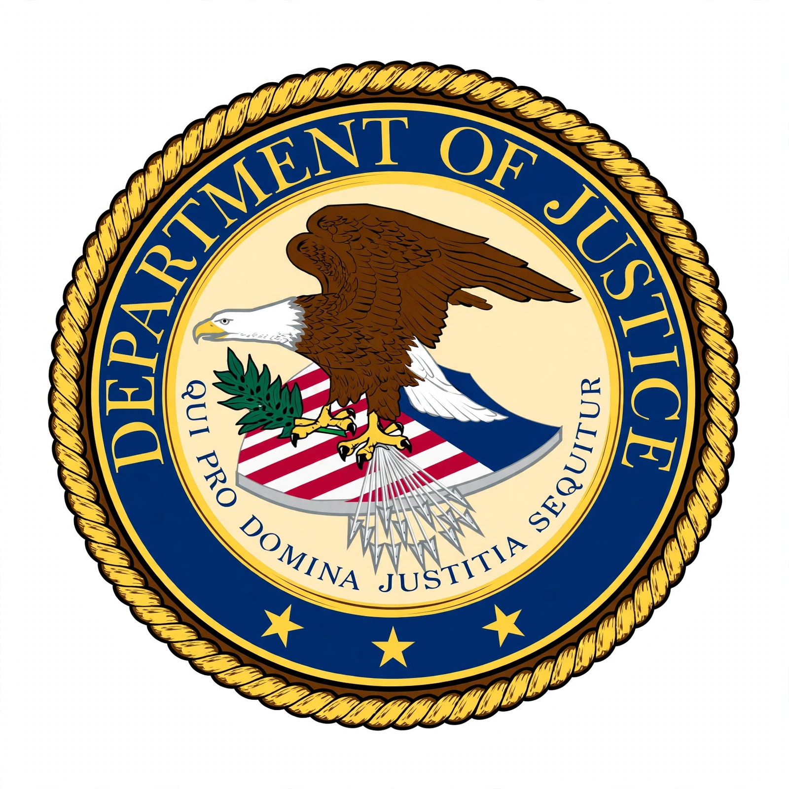

Foreign Corrupt Practices Act
From Wikipedia, the free encyclopedia
| Foreign Corrupt Practices Act of 1977 | |
|---|---|
 | |
| Enacted | December 19, 1977 |
| Signed by | President Jimmy Carter |
| Codification | 15 U.S.C. §§ 78dd-1 et seq. |
| Enforced by | DOJ and SEC |
The Foreign Corrupt Practices Act of 1977 (FCPA) is a United States federal law that prohibits U.S. citizens, residents and certain companies from bribing foreign government officials to obtain or retain business, and requires companies whose securities are listed in the United States to maintain accurate books and records and adequate internal accounting controls.
History
The FCPA followed Watergate-era investigations by the Securities and Exchange Commission, which found that more than 400 U.S. companies had made questionable payments exceeding $300 million to foreign officials, politicians and political parties. Congress concluded that such bribery was bad business, undermined democratic institutions, and harmed U.S. foreign policy. Amendments in 1988 clarified defences and penalties, and the International Anti-Bribery Act of 1998 extended the Act's reach in line with the OECD Anti-Bribery Convention.
Anti-bribery provisions
The anti-bribery provisions make it unlawful to corruptly give, offer or promise anything of value, directly or through intermediaries, to a foreign official to influence an official act, induce a violation of lawful duty, or secure an improper advantage in order to obtain or retain business. They apply to U.S. issuers, "domestic concerns" (U.S. citizens, nationals, residents and U.S.-organized businesses), and to foreign persons or firms that take acts in furtherance of a bribe while in U.S. territory. An exception exists for "facilitating or expediting payments" for routine governmental action, and affirmative defences apply where the payment was lawful under the written law of the foreign country, or was a reasonable, bona fide expenditure directly related to the promotion of products or performance of a contract.
Accounting provisions
The accounting provisions, administered by the SEC, require issuers to make and keep books and records that accurately and fairly reflect transactions, and to devise and maintain a system of internal accounting controls. Knowingly falsifying records or circumventing controls is prohibited; these provisions frequently support charges even where a bribe itself cannot be prosecuted.
Enforcement
The Department of Justice enforces the anti-bribery provisions criminally, while the SEC brings civil actions against issuers. Penalties can be severe: companies have paid hundreds of millions of dollars in combined fines and disgorgement, with the largest resolutions — such as those involving Siemens (2008), Alstom (2014), Petrobras (2018) and Goldman Sachs (2020) — exceeding $1 billion globally when coordinated with foreign authorities. In February 2025, an executive order paused FCPA enforcement for a review period, after which the Department of Justice issued revised guidelines refocusing enforcement priorities.
See also
This article is a recreation from memory in the style of Wikipedia.